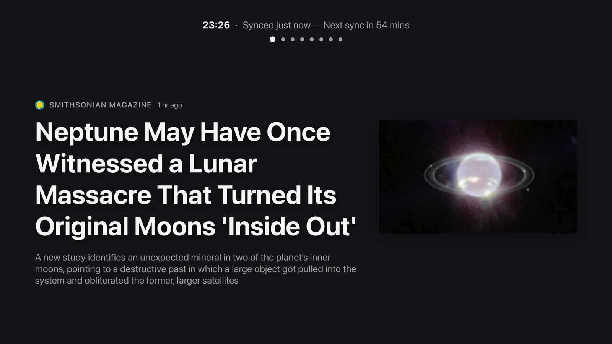

Built for Apple TV
Follow your favourite sites on Apple TV. Read articles full-screen, watch headlines on the screensaver, and use the iPhone companion to manage feeds and settings.
Find Marquee Reader on the App Store for Apple TV

When you step away, Marquee shows rotating headlines, a clock, and a photo of your choosing.
Read an article one word at a time with a highlighted letter to help you focus. Set the pace with your remote.
Your feeds stay on your devices and sync through your own iCloud account. No Marquee account, tracking or ads.
What's RSS?
RSS lets websites share new posts in a feed. Subscribe to news sites, blogs, podcasts or YouTube channels and read their updates in one place. You choose what to follow. Marquee shows posts newest first.
In Safari, tap Share ▸ Marquee Reader to find and subscribe to a site’s feed. You can also paste a website address or import a list of feeds from an OPML file.
Add it to your library and group feeds into folders. Everything stays on your Apple TV and your own iCloud.
Read new posts full-screen, show them one word at a time, or follow the headlines on the screensaver.


Screensaver
When Marquee is idle, it shows headlines from your feeds alongside a clock. Choose three headlines at once or one story with a photo and excerpt. Adjust how often they change, and use the companion app to add your own background photo.
Headlines move slightly and fade between positions once a minute to reduce the time bright text stays in one place. This movement turns off when Reduce Motion is enabled. You can turn it back on in settings.
A reader you'll want to look at
Headings, quotes, code, lists and images are laid out for your TV. Choose a font, theme and text size that suit you.


Speed Reading
Speed-reading mode shows an article one word at a time in the centre of the screen. A highlighted letter in each word stays in the same position to help you focus.
Always up to date
The dashboard shows unread articles, today’s posts and feed status. Marquee checks for updates in the background and waits longer between attempts when a site is not responding.


Marquee for iPhone
Use the free companion app to manage feeds and folders, change fonts and themes, and adjust the screensaver. You also use it to choose a custom background photo. Changes sync to your TV through iCloud. Send articles from the TV to your phone to read later.
To add a feed, open a page in Safari, tap Share and choose Marquee Reader. The app looks for the site’s feed and syncs your subscription to Apple TV. This also works on iPad and Mac.
Rotating live headlines, a clock and your own photo background keep the room alive.
Read one word at a time at 100 to 900 words per minute. Skip forward or back by sentence.
Control every TV setting, set a photo background, and send stories to your phone.
Read headings, quotes, code, lists and images in a layout made for TV.
Use your Siri Remote to swipe, select and share.
Share a page from Safari to find its feed and sync the subscription to your TV.
Paste a site's address and Marquee finds the feed for you.
Bring your whole subscription list over from any other reader in one go.
Group feeds into folders and find anything with keyword search.
Four typefaces, four themes and five text sizes to match any room.
Checks for new posts without repeatedly downloading unchanged feeds.
Inline images plus podcast audio and video, right inside the reader.
Sync your devices through your private iCloud account.
Marquee Reader stores your feeds and articles on your devices and uses your private iCloud account to sync them. We do not run servers that collect your reading activity.
Get Marquee Reader
Get Marquee Reader for Apple TV and the free companion for iPhone, iPad and Mac.